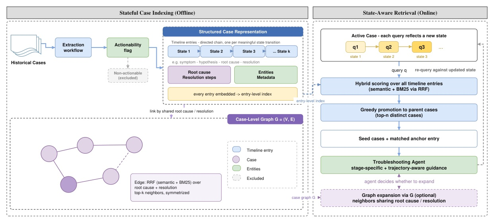
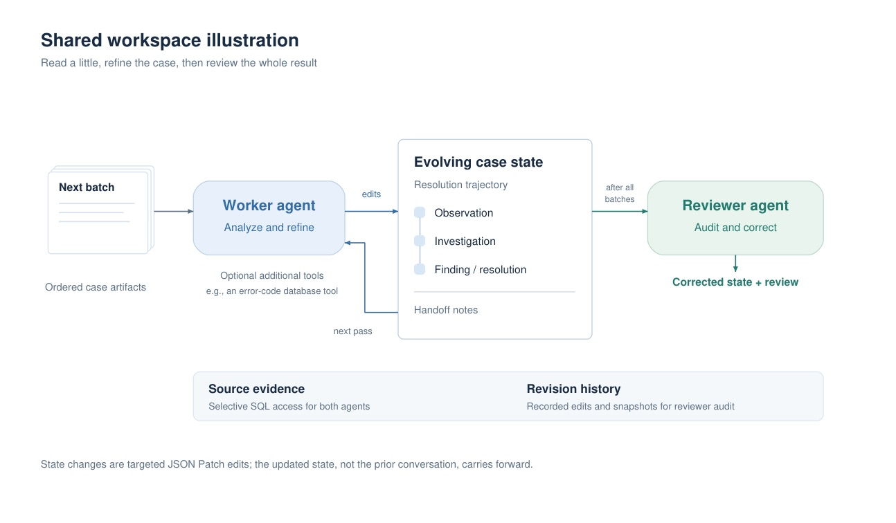

把歷史支援案例從靜態文件，改成能隨調查進度對齊的狀態軌跡。

RAFT 的主要增益不是「多建一張圖」，而是把 query 對到歷史案件裡相同的調查狀態，再把完整處理軌跡交回 agent。

text-embedding-3-large, gpt-5.2 indexing, gpt-5.4 evaluation, and no metadata filtering.Does any retrieved case share the gold root cause and resolution?
Measures whether retrieval finds a genuinely similar historical case.
How many atomic root-cause or resolution claims are entailed by retrieved context?
An LLM judge atomizes gold claims and checks each against context.
| Method | 0% | 30% | 60% |
|---|---|---|---|
| Vanilla RAG | 0.673 | 0.719 | 0.769 |
| HippoRAG2 | 0.650 | 0.688 | 0.711 |
| Fast-GraphRAG | 0.421 | 0.442 | 0.583 |
| RAFT | 0.842 | 0.871 | 0.888 |
| Metric / method | 0% | 30% | 60% |
|---|---|---|---|
| Root cause · Vanilla | 0.597 | 0.625 | 0.672 |
| Root cause · RAFT | 0.649 | 0.675 | 0.689 |
| Resolution · Vanilla | 0.528 | 0.548 | 0.590 |
| Resolution · RAFT | 0.563 | 0.587 | 0.605 |
As queries gain evidence, correct RAFT matches move deeper into historical trajectories:
9.1% entry depth at 0% progress → 54.0% at 60%.
| Progress | RAFT - Vanilla | 95% CI |
|---|---|---|
| 0% | +16.79 pp | [+13.91, +19.78] |
| 30% | +14.79 pp | [+12.02, +17.73] |
| 60% | +12.19 pp | [+9.75, +14.68] |
| Progress | RAFT change | Vanilla change | paired advantage |
|---|---|---|---|
| 30% | −11.14 pp | −25.93 pp | +14.79 pp |
| 60% | −9.36 pp | −49.31 pp | +39.94 pp |
| Progress | direct sibling recovery | with expansion | change |
|---|---|---|---|
| 0% | 73.71% | 75.65% | +1.94 pp |
| 30% | 79.84% | 82.74% | +2.90 pp |
| 60% | 88.71% | 88.55% | −0.16 pp |
| Method | 0% | 30% | 60% |
|---|---|---|---|
| Vanilla RAG | 0.667 | 0.667 | 0.789 |
| RAFT | 0.833 | 0.840 | 0.895 |
“Embedding and retrieving at the entry level rather than the case level surfaces cases whose intermediate states most closely match the active case.”
「在 entry 層級而非整案層級嵌入與檢索，能找出中間狀態最接近當前案件的歷史案例。」§1 p.2
“The match moves steadily deeper as the query reflects a later stage ... rather than re-matching symptoms.”
「隨著 query 反映更晚的階段，匹配點會穩定地往案例深處移動，而不是反覆匹配最初症狀。」§5.4 p.6
“State changes are targeted JSON Patch edits; the updated state, not the prior conversation, carries forward.”
「狀態以定點 JSON Patch 編輯更新；往後傳遞的是更新後的狀態，而不是先前整段對話。」Fig. 2 p.12
“Graph expansion [is] an optional evidence-diversification mechanism rather than the source of RAFT’s main retrieval gain.”
「圖擴張是可選的證據多樣化機制，而非 RAFT 主要檢索增益的來源。」Appendix C.5 p.14
Make an agent retrieve the historical state that matches its current investigation, then restore the trajectory around it.